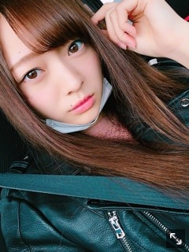

でこがひろいんじゃ〜。
前髪上げてることが多いですねえ。
おデコはとっても広いです。
ので、表に出て前髪を上げることには
多少の抵抗があります。
なんてったって広すぎるので。
小学生の頃の梅澤は
常に前髪上げていたでこっぱちだったので
でこ〜と呼ばれていたこともありました。
すっかり前髪が伸びてきたので
切らなきゃです。
普段おでこにファンデは
塗らないのです☀︎隠れるからね
映画やドラマ、アニメを
観られる時間が増えたので
気になったものをチェックしているのですが。
ちょっとサスペンス系だったり
ホラー作品を観たくても
後々思い出してしまう癖があるので（笑）
中々観られません〜。
むかーし、小学生の頃に観たホラー映画で
一回きりしか観ていないのに
トラウマで今でも忘れられないたまに思い出してしまう作品が２つありまして。
思い出すだけで、あの、結構、
背中が涼しくなってくるのですが。
姉からつい最近その映画をまた観たと
連絡が来ました︎︎︎︎✌︎こわい
しかも一人で︎︎︎︎✌︎つよい
でもそれほどインパクトがあって
印象的な作品って、凄いですよね。
皆様もあります？そんな作品。
昔の写真とか
色々と整理しようかなと思って
遡って見てたんです
いや〜、若くて。見た目も中身も。
写真見返すとその時考えていたこととか
思い返すじゃないですか。
時間は自分が思うよりずっと
ずっとずっと過ぎていってるみたいです( '-' )
時間が経っているのはもちろん、
当たり前に理解して感じてはいるのだけど。
自分の想像しているより、感じているより
今カチカチ過ぎてる時計の秒針の価値はもっと大きいですね( '-' )
昔を振り返ってそう感じるから
今を大事に大事に生きているつもりでも
未来の私からしたら
もっと大事にできたでしょ、もっと、もっと
って思うわけだから
納得いく人生を過ごすのって難しいのだろうなあ( '-' )

これなんて、
高３の時です。
もう３年も前になるのか。まだ３年なのか。
自撮り特訓中だったなあ〜
毎日何百枚って自撮りして研究してましたね。
メイクも服装も髪型も
自撮りするために毎日変えてみたりして。
もちろんこの世界入るまで
自撮りなんてしたこと無かったから、
今後のために練習しなきゃって必死に（笑）
プリンシパル稽古の時、ですねえ
髪明るいなあ
早くみんなで一緒に笑いたいです
皆様にも早くお会いして
お話したいです〜！
今までの撮影して頂いてきたオフショットとか
載せてない写真山ほどあるので
また撮影時のオフショット載せてみますね☀︎
昔の写真シリーズ。
今日はスイートポテトを焼きました。
夜は生姜焼き☀︎
毎日甘いものが欲しくなるもので
せっせと作ってしまいます。
母のご飯が食べたい( '-' )
あ！あとですね
初めて表紙を務めさせていただきます
withの表紙が解禁になっております！❤︎
ゆいさんとです❤︎
withの公式Instagram、公式Twitterを
覗いてみてください☀︎
思い出の号になりそうです。
沢山の方に見て頂けますように！
映像研もよろしくです︎︎︎︎✌︎
では。
おやすみなさい。
いい夢見てください〜！！
三日坊主をいつの間にか卒業できていたようです。わーい！
Original：https://www.nogizaka46.com/s/n46/diary/detail/55946?ima=4940&cd=MEMBER